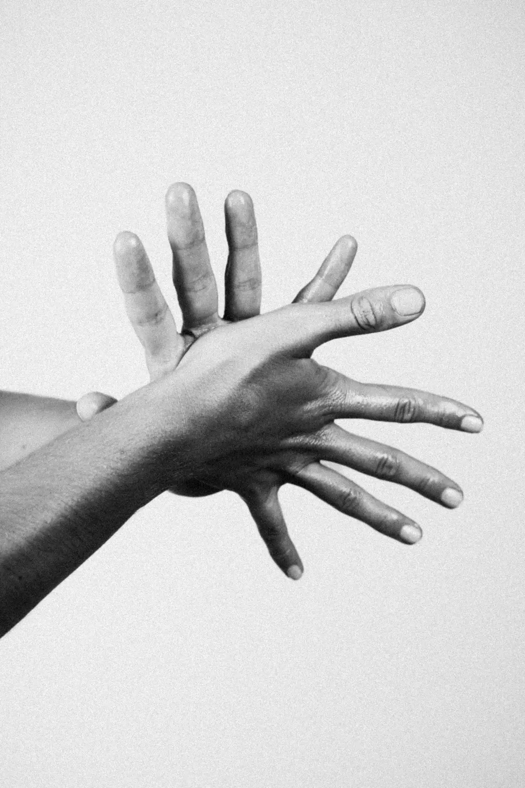
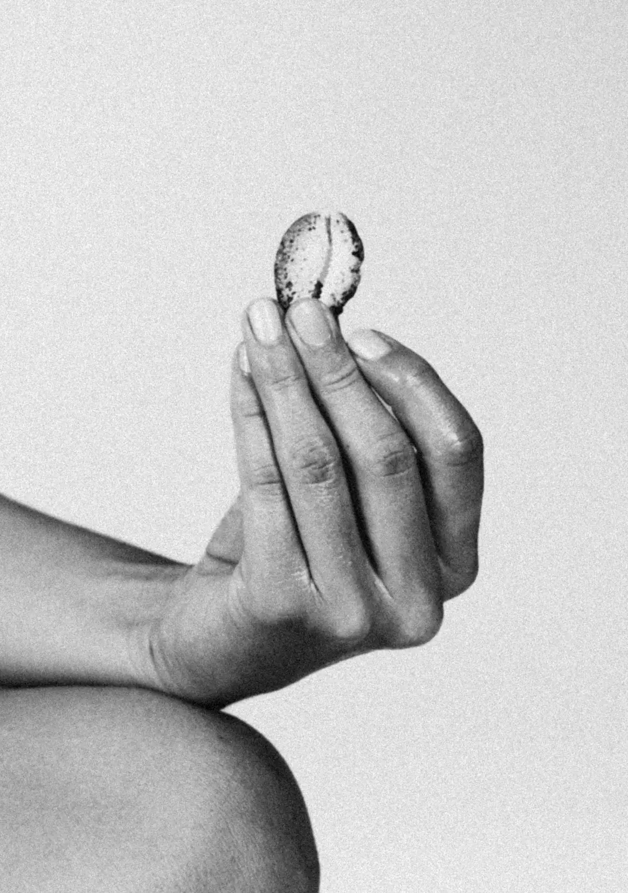
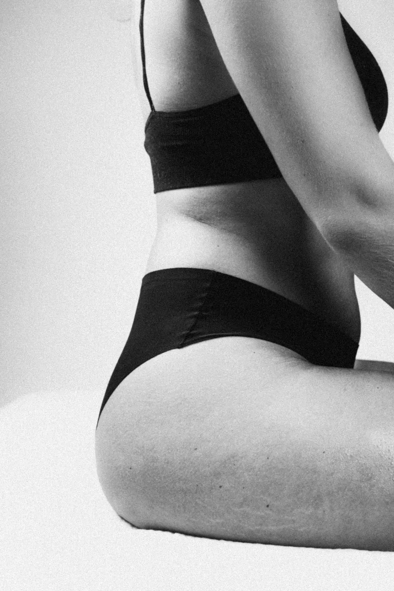

Les massages - Body Sculpting et Sportif
LE BODY SCULPTING

LE SPORTIF
le Sportif
Soin profond du corps entier
Le massage sportif est réalisé avec des pressions lentes et appuyées pour travailler les muscles en profondeur. Les gestes combinent étirements, frictions et pressions soutenues afin de dénouer les tensions, améliorer la récupération musculaire et redonner de la mobilité au corps. Idéal pour récupérer, relâcher les muscles et repartir plus performant. Le massage dure entre 1h et 1h15.
À l'unité • 1 massage sportif • 75€
En pack • 4 massages sportifs (+1 offert)• 300€


Le Body Sculpting
Soin tonique et ciblé
Le massage Body Sculpting est réalisé avec des manœuvres dynamiques et profondes. Les gestes alternent
pétrissages, pressions appuyées et techniques de stimulation pour aider à lisser la peau, activer la
circulation et favoriser le remodelage des zones travaillées. Un moment pour relancer le corps, affiner la
silhouette et se sentir plus tonique.
Je le propose sur deux zones ciblées : le ventre et les jambes (fesses comprises). Pour chaque zone, le
massage dure entre 45 min et 1h. Pour maximiser les résultats, je conseille de faire pour chaque zone
ciblée : une routine complète* – 4 séances (1 par semaine), puis en entretien – 1 séance tous les 3 mois.
À l'unité • 1 massage ventre • 95€
En routine* • 4 massages ventre (+1 offert)• 380€
À l'unité • 1 massage jambes • 85€
En routine* • 4 massages jambes (+1 offert)• 340€
*Idéalement, un massage par semaine pendant un mois, puis un massage d'entretien tous les 3 mois.
Le premier massage d'entretien est offert !